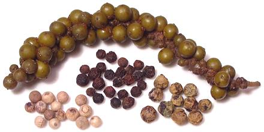

Peppercorns

[Piper nigrum]
Pepper originated on the Malabar (west) coast of India, but major
plantations were later established in Indonesia for trade with the Dutch. It
is now grown also in Brazil and several Southeast Asian countries. Pepper
has never been popular in Indonesia despite being grown there, but has long
been used in India and parts of Southeast Asia, particularly before chilis
were brought from South America. In Europe it has been the most important
spice since the Roman Empire and was extremely expensive until the 18th
century due to trade monopolies.
In more recent times pepper has spread to just about every cuisine,
particularly since the price has fallen so much and growing area has
increased. Pepper use has increased in Southeast Asia due to it being
grown there now, and Thailand has taken a liking to fresh green
peppercorns. The photo specimens are: brined Green Peppercorns
(top), force dried
Green Peppercorns (right), White Peppercorns (left) and
Black Peppercorns (center). All these are from the same
piper nigrum pepper vine, just picked at different stages of
ripeness and processed differently.
More on Spices |
More on Order Piperales.
Few spices fade as quickly as peppercorns once ground, so you should
always use fresh ground pepper. That can be a real hassle so I grind up
about 2 teaspoons of black peppercorns every week and store it tightly
capped in one of those tiny "must be useful for something" jars
"sampler set" jams and jellies come in.
Pepper added to a recipe while it cooks will have a rather different
effect than pepper applied at serving time.
Peppercorns of all colors are from the same piper nigrum pepper
vine, just picked at different stages of ripeness and processed
differently. Here are the main types:
Black Peppercorns
are berries taken just before they are
mature and sun dried with the green outer skin and flesh still
surrounding the seed. The closer to mature at harvest the better the
product, but the more risk, so a higher cost.Tillicherry pepper
is the highest grade of black pepper as
the berries are picked at the ripest point they can still be made into
black pepper - actually Tillicherry is more a dark brown. It comes from
Tillicherry (Tellicherry or Thalassery) on the Malabar coast of Karala
state in India.White Peppercorns
are fully matured red berries that are
processed so the outer skin and flesh are rotted off. This provides the
full pungency but little of the unique pepper flavor. White pepper is
used in European cooking to keep white sauces pure white - considered
important in the late 19th and early 20th centuries when "purity = white"
was as important as "natural" is today. White peppercorns are also
favored in China and somewhat in Southeast Asia - but I generally use
the more flavorful black anyway.Green Peppercorns
are a lot more herbal in flavor than black
peppercorns. They are either fresh (available only in pepper growing
areas), force dried, pickled, or packed in brine. Dried green peppercorns
are the correct item to use in Western dishes like pepper steak that use
large amounts of peppercorns.
If you have a recipe asking for fresh green peppercorns and don't
know somebody at a pepper plantation you can used brined (a decent
substitute) or you can soak force dried green peppercorns in water to
reconstitute them (not the same but better than none). Pickled green
peppercorns are considered too acidic for most recipes.
Special Handling: The brine green peppercorns are packed in
starts turning color immediately on opening. It will be black within
hours, even refrigerated. Remove the strings of peppercorns, rinse and
place them in plastic bags with water to cover (to prevent freezer burn)
and freeze.Red Peppercorns
are fully ripe with skin on. They are only
available pickled much beyond the pepper plantations and are very rare
even there.Pink Peppercorns
are not pepper at all, but seeds of a New
World tree related to cashews and sumac. See
Pink Peppercorns.Sichuan Peppercorns
are not pepper at all but tiny seed pods
from a Prickly Ash tree. See
Sichuan Peppercorns.
sp_pepperz 101012 - www.clovegarden.com
©Andrew Grygus - agryg@clovegarden.com - Photos
on this page not otherwise credited © cg1
- Linking to and non-commercial use of this page permitted